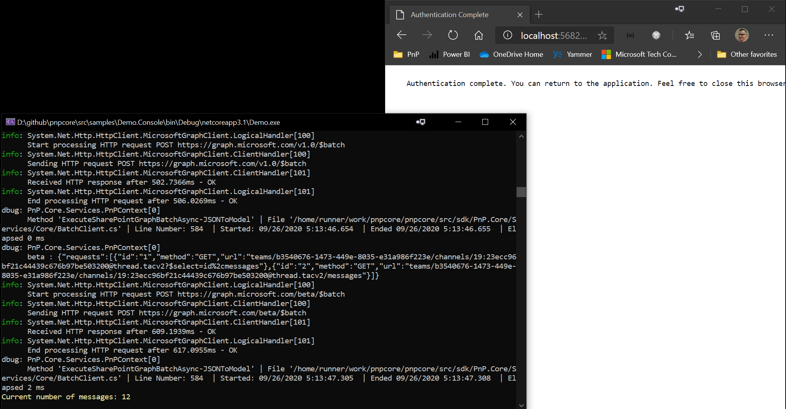

PnP Core SDK - Console Sample
This solution demonstrates how the PnP Core SDK can be used in a console application. In this sample we're querying a modern group connected SharePoint site which also has Teams. If you're testing this code against a modern communication site or another classic site then please comment out the "teams" parts.
Source code
You can find the sample source code here: /samples/Demo.Console
Prerequisites
- .NET 10.0 SDK or higher installed. You can download it from https://dotnet.microsoft.com/download
Additional prerequisites for Visual Studio Code
In order to run and debug this sample in Visual Studio Code you need to install the following extensions:
Sample configuration
Step 1) Create an Azure AD application
The one thing to configure before you can use this sample is an Azure AD application:
- Navigate to https://entra.microsoft.com/
- Click on Entra ID, followed by navigating to App registrations
- Add a new application via the New registration link
- Give your application a name, e.g. PnPCoreSDKConsoleAppDemo, make sure Accounts in this organizational directory only is selected and add http://localhost as redirect URI (only needed if you want use an interactive authentication flow). Clicking on Register will create the application and open it
- Take note of the Application (client) ID value, you'll need it in the next step
- Click on API permissions and add these delegated permissions
- Microsoft Graph -> Directory.Read.All
- Microsoft Graph -> User.Read
- Microsoft Graph -> ChannelMessage.Read.All
- Microsoft Graph -> ChannelMessage.Send
- Microsoft Graph -> TeamSettings.ReadWrite.All
- Microsoft Graph -> TeamsTab.ReadWrite.All
- Microsoft Graph -> Sites.Manage.All
- SharePoint -> AllSites.Manage
- Consent the application permissions by clicking on Grant admin consent
- From Overview,
- copy the value of Directory (tenant) ID
- copy the value of Application (client) ID
Step 2) Configure the application
This demo application comes with code for 2 different authentication providers, the
CredentialManagerAuthenticationProvideror theInteractiveAuthenticationProvidercan be used. The latter is the default value. To configure the app update theappsettings.jsonfile with:Configure the Tenant ID of your app as the value of
CustomSettings:TenantIdin appsettings.json settingConfigure the Client ID of your app as the value of
CustomSettings:ClientIdin appsettings.json settingConfigure the URL of a target Microsoft SharePoint Online modern team site collection as the value of
CustomSettings:DemoSiteUrlin appsettings.json settingConfigure the URL of a target Microsoft SharePoint Online sub site as the value of
CustomSettings:DemoSubSiteUrlin appsettings.json setting
Using an environment specific appsettings.{DOTNET_ENVIRONMENT}.json file is supported also.
The DOTNET_ENVIRONMENT default value for debugging is set to Development, so you can create an appsettings.Development.json file and add your configuration there.
To set a different environment for debugging you can use the env.txt file in the root of the project.
You can use env.sample and appsettings.copyme.json as templates for env.txt and appsettings.{DOTNET_ENVIRONMENT}.json respectively and replace the placeholders ({ClientId}, {TenantId}, {TenantName}, {CredentialManagerName}).
Be sure to have a Team in Microsoft Teams backing the modern team site in the above site collection
Step 3) Run the sample
Visual Studio Code and Visual Studio
Press F5 to launch the sample.
When clicking on one of the buttons a new browser window/tab will open asking you to authenticate with your Microsoft 365 account. Depending on the button you clicked, the application will execute the action and displays the results.
Terminal
First you will need to build the project by running dotnet build in the project folder. Once the build is successful you can run the sample by executing dotnet run in the same folder.
Use dotnet run --environment DOTNET_ENVIRONMENT={EnvironmentName} to specify the desired environment.
Default environment is Production. The default environment will be overwritten by launchSettings.json file if present. If there is no appsettings file for the specified environment, the setttings from appsettings.json will not be overwritten and will be used.
When clicking on one of the buttons a new browser window/tab will open asking you to authenticate with your Microsoft 365 account.
